1 File类的使用
- File类的一个对象，代表一个文件或一个文件目录(俗称：文件夹)。
- File类声明在java.io包下。
- File类中涉及到关于文件或文件目录的创建、删除、重命名、修改时间、文件大小等方法，并未涉及到写入或读取文件内容的操作。如果需要读取或写入文件内容，必须使用IO流来完成。
- 后续File类的对象常会作为参数传递到流的构造器中，指明读取或写入的”终点”。
1.1 File的实例化和路径
常用构造器：
- File(String filePath)
- File(String parentPath,String childPath)
- File(File parentFile,String childPath)
路径的分类：
- 相对路径：相较于某个路径下，指明的路径。
- 绝对路径：包含盘符在内的文件或文件目录的路径
IDEA中：
- 如果开发使用JUnit中的单元测试方法测试，相对路径即为当前Module下。
- 如果大家使用main()测试，相对路径即为当前的Project下。
Eclipse中：不管使用单元测试方法还是使用main()测试，相对路径都是当前的Project下。
路径分隔符：
- windows和DOS系统默认使用“\”来表示
- UNIX和URL使用“/”来表示
1.2 File类的常用方法
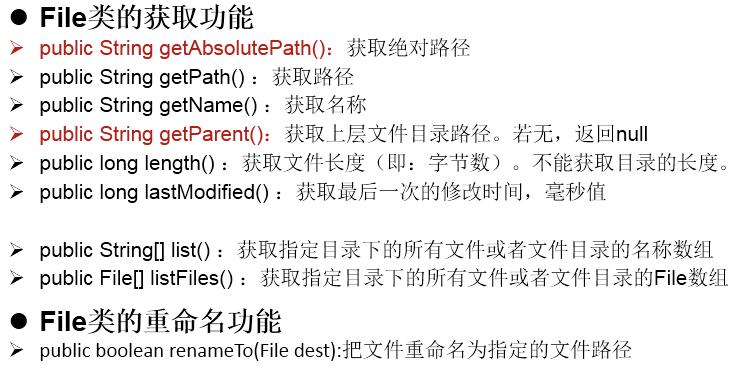
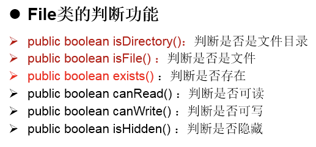
2 IO流概述
2.1 流的分类和体系结构
流的分类
- 操作数据单位：字节流、字符流
- 数据的流向：输入流、输出流
- 流的角色：节点流、处理流
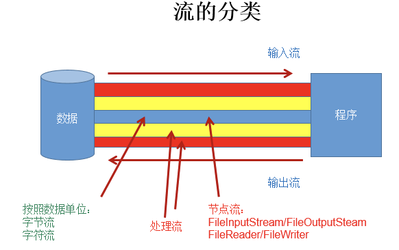
流的体系结构：
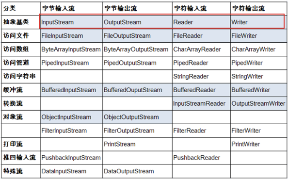
红框对应的是IO流中的4个抽象基类。蓝框的流需要重点关注。
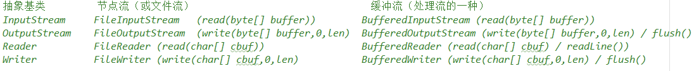
2.2 输入、输出的标准化过程
输入过程：
- 创建File类的对象，指明读取的数据的来源。（要求此文件一定要存在）
- 创建相应的输入流，将File类的对象作为参数，传入流的构造器中
- 具体的读入过程：创建相应的byte[] 或 char[]。
- 关闭流资源：程序中出现的异常需要使用try-catch-finally处理。
输出过程：
- 创建File类的对象，指明写出的数据的位置。（不要求此文件一定要存在）
- 创建相应的输出流，将File类的对象作为参数，传入流的构造器中。
- 具体的写出过程：
write(char[]/byte[] buffer,0,len) - 关闭流资源：说明：程序中出现的异常需要使用try-catch-finally处理。
3 节点流（文件流）
3.1 FileReader/FileWriter的使用
FileReader的使用：
/*
将day09下的hello.txt文件内容读入程序中，并输出到控制台
说明点：
1. read()的理解：返回读入的一个字符。如果达到文件末尾，返回-1
2. 异常的处理：为了保证流资源一定可以执行关闭操作。需要使用try-catch-finally处理
3. 读入的文件一定要存在，否则就会报FileNotFoundException。
*/
@Test
public void testFileReader1() {
FileReader fr = null;
try {
//1.File类的实例化
File file = new File("hello.txt");
//2.FileReader流的实例化
fr = new FileReader(file);
//3.读入的操作
//read(char[] cbuf):返回每次读入cbuf数组中的字符的个数。如果达到文件末尾，返回-1
char[] cbuf = new char[5];
int len;
while((len = fr.read(cbuf)) != -1){
//方式一：
//错误的写法
// for(int i = 0;i < cbuf.length;i++){
// System.out.print(cbuf[i]);
// }
//正确的写法
// for(int i = 0;i < len;i++){
// System.out.print(cbuf[i]);
// }
//方式二：
//错误的写法,对应着方式一的错误的写法
// String str = new String(cbuf);
// System.out.print(str);
//正确的写法
String str = new String(cbuf,0,len);
System.out.print(str);
}
} catch (IOException e) {
e.printStackTrace();
} finally {
if(fr != null){
//4.资源的关闭
try {
fr.close();
} catch (IOException e) {
e.printStackTrace();
}
}
}
}FileWriter的使用：
/*
从内存中写出数据到硬盘的文件里。
说明：
1. 输出操作，对应的File可以不存在的。并不会报异常
2.
File对应的硬盘中的文件如果不存在，在输出的过程中，会自动创建此文件。
File对应的硬盘中的文件如果存在：
如果流使用的构造器是：FileWriter(file,false) / FileWriter(file):对原文件的覆盖
如果流使用的构造器是：FileWriter(file,true):不会对原文件覆盖，而是在原文件基础上追加内容
*/
@Test
public void testFileWriter() {
FileWriter fw = null;
try {
//1.提供File类的对象，指明写出到的文件
File file = new File("hello1.txt");
//2.提供FileWriter的对象，用于数据的写出
fw = new FileWriter(file,false);
//3.写出的操作
fw.write("I have a dream!\n");
fw.write("you need to have a dream!");
} catch (IOException e) {
e.printStackTrace();
} finally {
//4.流资源的关闭
if(fw != null){
try {
fw.close();
} catch (IOException e) {
e.printStackTrace();
}
}
}
}文本文件的复制：
@Test
public void testFileReaderFileWriter() {
FileReader fr = null;
FileWriter fw = null;
try {
//1.创建File类的对象，指明读入和写出的文件
File srcFile = new File("hello.txt");
File destFile = new File("hello2.txt");
//不能使用字符流来处理图片等字节数据
// File srcFile = new File("爱情与友情.jpg");
// File destFile = new File("爱情与友情1.jpg");
//2.创建输入流和输出流的对象
fr = new FileReader(srcFile);
fw = new FileWriter(destFile);
//3.数据的读入和写出操作
char[] cbuf = new char[5];
int len;//记录每次读入到cbuf数组中的字符的个数
while((len = fr.read(cbuf)) != -1){
//每次写出len个字符
fw.write(cbuf,0,len);
}
} catch (IOException e) {
e.printStackTrace();
} finally {
//4.关闭流资源
//方式一：
// try {
// if(fw != null)
// fw.close();
// } catch (IOException e) {
// e.printStackTrace();
// }finally{
// try {
// if(fr != null)
// fr.close();
// } catch (IOException e) {
// e.printStackTrace();
// }
// }
//方式二：
try {
if(fw != null)
fw.close();
} catch (IOException e) {
e.printStackTrace();
}
try {
if(fr != null)
fr.close();
} catch (IOException e) {
e.printStackTrace();
}
}
}3.2 FileInputStream / FileOutputStream的使用
* 1. 对于文本文件(.txt,.java,.c,.cpp)，使用字符流处理
* 2. 对于非文本文件(.jpg,.mp3,.mp4,.avi,.doc,.ppt,...)，使用字节流处理
/*
实现对图片的复制操作
*/
@Test
public void testFileInputOutputStream() {
FileInputStream fis = null;
FileOutputStream fos = null;
try {
//1.造文件
File srcFile = new File("爱情与友情.jpg");
File destFile = new File("爱情与友情2.jpg");
//2.造流
fis = new FileInputStream(srcFile);
fos = new FileOutputStream(destFile);
//3.复制的过程
byte[] buffer = new byte[5];
int len;
while((len = fis.read(buffer)) != -1){
fos.write(buffer,0,len);
}
} catch (IOException e) {
e.printStackTrace();
} finally {
if(fos != null){
//4.关闭流
try {
fos.close();
} catch (IOException e) {
e.printStackTrace();
}
}
if(fis != null){
try {
fis.close();
} catch (IOException e) {
e.printStackTrace();
}
}
}
}4 缓冲流
缓冲流涉及到的类：
- BufferedInputStream
- BufferedOutputStream
- BufferedReader
- BufferedWriter
作用：提供流的读取、写入的速度
- 原因：内部提供了一个缓冲区，默认情况下是8kb。
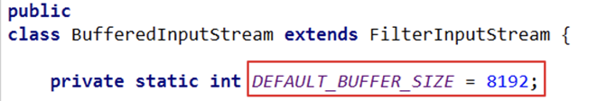
典型代码：
// 使用BufferedInputStream和BufferedOutputStream:处理非文本文件
//实现文件复制的方法
public void copyFileWithBuffered(String srcPath,String destPath){
BufferedInputStream bis = null;
BufferedOutputStream bos = null;
try {
//1.造文件
File srcFile = new File(srcPath);
File destFile = new File(destPath);
//2.造流
//2.1 造节点流
FileInputStream fis = new FileInputStream((srcFile));
FileOutputStream fos = new FileOutputStream(destFile);
//2.2 造缓冲流
bis = new BufferedInputStream(fis);
bos = new BufferedOutputStream(fos);
//3.复制的细节：读取、写入
byte[] buffer = new byte[1024];
int len;
while((len = bis.read(buffer)) != -1){
bos.write(buffer,0,len);
}
} catch (IOException e) {
e.printStackTrace();
} finally {
//4.资源关闭
//要求：先关闭外层的流，再关闭内层的流
if(bos != null){
try {
bos.close();
} catch (IOException e) {
e.printStackTrace();
}
}
if(bis != null){
try {
bis.close();
} catch (IOException e) {
e.printStackTrace();
}
}
//说明：关闭外层流的同时，内层流也会自动的进行关闭。关于内层流的关闭，我们可以省略.
// fos.close();
// fis.close();
}
}
// 使用BufferedReader和BufferedWriter：处理文本文件
@Test
public void testBufferedReaderBufferedWriter(){
BufferedReader br = null;
BufferedWriter bw = null;
try {
//创建文件和相应的流
br = new BufferedReader(new FileReader(new File("dbcp.txt")));
bw = new BufferedWriter(new FileWriter(new File("dbcp1.txt")));
//读写操作
//方式一：使用char[]数组
// char[] cbuf = new char[1024];
// int len;
// while((len = br.read(cbuf)) != -1){
// bw.write(cbuf,0,len);
// // bw.flush();
// }
//方式二：使用String
String data;
while((data = br.readLine()) != null){
//方法一：
// bw.write(data + "\n");//data中不包含换行符
//方法二：
bw.write(data);//data中不包含换行符
bw.newLine();//提供换行的操作
}
} catch (IOException e) {
e.printStackTrace();
} finally {
//关闭资源
if(bw != null){
try {
bw.close();
} catch (IOException e) {
e.printStackTrace();
}
}
if(br != null){
try {
br.close();
} catch (IOException e) {
e.printStackTrace();
}
}
}
}5 转换流
5.1 转换流的使用
转换流涉及到的类：属于字符流
- InputStreamReader：将一个字节的输入流转换为字符的输入流
- 解码：字节、字节数组 —>字符数组、字符串
- OutputStreamWriter：将一个字符的输出流转换为字节的输出流
- 编码：字符数组、字符串 —> 字节、字节数组
说明：编码决定了解码的方式
作用：提供字节流与字符流之间的转换
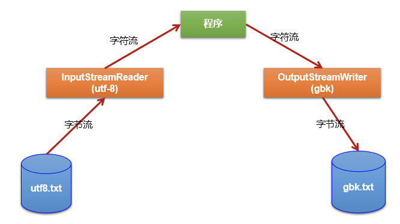
典型实现：
@Test
public void test1() throws IOException {
FileInputStream fis = new FileInputStream("dbcp.txt");
// InputStreamReader isr = new InputStreamReader(fis);//使用系统默认的字符集
//参数2指明了字符集，具体使用哪个字符集，取决于文件dbcp.txt保存时使用的字符集
InputStreamReader isr = new InputStreamReader(fis,"UTF-8");//使用系统默认的字符集
char[] cbuf = new char[20];
int len;
while((len = isr.read(cbuf)) != -1){
String str = new String(cbuf,0,len);
System.out.print(str);
}
isr.close();
}
/*
此时处理异常的话，仍然应该使用try-catch-finally
综合使用InputStreamReader和OutputStreamWriter
*/
@Test
public void test2() throws Exception {
//1.造文件、造流
File file1 = new File("dbcp.txt");
File file2 = new File("dbcp_gbk.txt");
FileInputStream fis = new FileInputStream(file1);
FileOutputStream fos = new FileOutputStream(file2);
InputStreamReader isr = new InputStreamReader(fis,"utf-8");
OutputStreamWriter osw = new OutputStreamWriter(fos,"gbk");
//2.读写过程
char[] cbuf = new char[20];
int len;
while((len = isr.read(cbuf)) != -1){
osw.write(cbuf,0,len);
}
//3.关闭资源
isr.close();
osw.close();
}5.2 编码集
常见的编码表：
- ASCII：美国标准信息交换码。用一个字节的7位可以表示。
- ISO8859-1：拉丁码表，欧洲码表。用一个字节的8位表示。
- GB2312：中国的中文编码表。最多两个字节编码所有字符。
- GBK：中国的中文编码表升级，融合了更多的中文文字符号。最多两个字节编码。
- Unicode：国际标准码，融合了目前人类使用的所字符。为每个字符分配唯一的字符码。所有的文字都用两个字节来表示。
- UTF-8：变长的编码方式，可用1-4个字节来表示一个字符。
对后面学习的启示：客户端/浏览器端 <—-> 后台(java,GO,Python,Node.js,php) <—-> 数据库。要求前前后后使用的字符集都要统一：UTF-8。
6 其他流
6.1 标准输入、输出流
System.in：标准的输入流，默认从键盘输入。
System.out：标准的输出流，默认从控制台输出。
修改默认的输入和输出行为：
System类的setIn(InputStream is) / setOut(PrintStream ps)方式重新指定输入和输出的流。
6.2 打印流
PrintStream 和PrintWriter：
- 提供了一系列重载的print()和println()方法，用于多种数据类型的输出
- System.out返回的是PrintStream的实例
6.3 数据流
DataInputStream 和 DataOutputStream
作用：用于读取或写出基本数据类型的变量或字符串
示例代码：
/*
练习：将内存中的字符串、基本数据类型的变量写出到文件中。
注意：处理异常的话，仍然应该使用try-catch-finally.
*/
@Test
public void test3() throws IOException {
//1.
DataOutputStream dos = new DataOutputStream(new FileOutputStream("data.txt"));
//2.
dos.writeUTF("刘建辰");
dos.flush();//刷新操作，将内存中的数据写入文件
dos.writeInt(23);
dos.flush();
dos.writeBoolean(true);
dos.flush();
//3.
dos.close();
}
/*
将文件中存储的基本数据类型变量和字符串读取到内存中，保存在变量中。
注意点：读取不同类型的数据的顺序要与当初写入文件时，保存的数据的顺序一致！
*/
@Test
public void test4() throws IOException {
//1.
DataInputStream dis = new DataInputStream(new FileInputStream("data.txt"));
//2.
String name = dis.readUTF();
int age = dis.readInt();
boolean isMale = dis.readBoolean();
System.out.println("name = " + name);
System.out.println("age = " + age);
System.out.println("isMale = " + isMale);
//3.
dis.close();
}7 对象流
对象流： ObjectInputStream 和 ObjectOutputStream
作用：
- ObjectOutputStream：内存中的对象—>存储中的文件、通过网络传输出去：序列化过程
- ObjectInputStream：存储中的文件、通过网络接收过来 —>内存中的对象：反序列化过程
对象的序列化机制：对象序列化机制允许把内存中的Java对象转换成平台无关的二进制流，从而允许把这种二进制流持久地保存在磁盘上，或通过网络将这种二进制流传输到另一个网络节点。//当其它程序获取了这种二进制流，就可以恢复成原来的Java对象
序列化代码实现：
@Test
public void testObjectOutputStream(){
ObjectOutputStream oos = null;
try {
//1.
oos = new ObjectOutputStream(new FileOutputStream("object.dat"));
//2.
oos.writeObject(new String("我爱北京天安门"));
oos.flush();//刷新操作
oos.writeObject(new Person("王铭",23));
oos.flush();
oos.writeObject(new Person("张学良",23,1001,new Account(5000)));
oos.flush();
} catch (IOException e) {
e.printStackTrace();
} finally {
if(oos != null){
//3.
try {
oos.close();
} catch (IOException e) {
e.printStackTrace();
}
}
}
}反序列化代码实现：
@Test
public void testObjectInputStream(){
ObjectInputStream ois = null;
try {
ois = new ObjectInputStream(new FileInputStream("object.dat"));
Object obj = ois.readObject();
String str = (String) obj;
Person p = (Person) ois.readObject();
Person p1 = (Person) ois.readObject();
System.out.println(str);
System.out.println(p);
System.out.println(p1);
} catch (IOException e) {
e.printStackTrace();
} catch (ClassNotFoundException e) {
e.printStackTrace();
} finally {
if(ois != null){
try {
ois.close();
} catch (IOException e) {
e.printStackTrace();
}
}
}
}实现序列化的对象所属的类需要满足：
- 需要实现接口：Serializable
- 当前类提供一个全局常量：serialVersionUID
- 除了当前Person类需要实现Serializable接口之外，还必须保证其内部所属性也必须是可序列化的。（默认情况下，基本数据类型可序列化）
补充：ObjectOutputStream和ObjectInputStream不能序列化static和transient修饰的成员变量。
8 RandomAccessFile的使用
随机存取文件流：RandomAccessFile
使用说明：
- RandomAccessFile直接继承于java.lang.Object类，实现了DataInput和DataOutput接口
- RandomAccessFile既可以作为一个输入流，又可以作为一个输出流
- 如果RandomAccessFile作为输出流时，写出到的文件如果不存在，则在执行过程中自动创建。
- 如果写出到的文件存在，则会对原文件内容进行覆盖。（默认情况下，从头覆盖）
- 可以通过相关的操作，实现RandomAccessFile“插入”数据的效果。seek(int pos)
@Test
public void test1() {
RandomAccessFile raf1 = null;
RandomAccessFile raf2 = null;
try {
//1.
raf1 = new RandomAccessFile(new File("爱情与友情.jpg"),"r");
raf2 = new RandomAccessFile(new File("爱情与友情1.jpg"),"rw");
//2.
byte[] buffer = new byte[1024];
int len;
while((len = raf1.read(buffer)) != -1){
raf2.write(buffer,0,len);
}
} catch (IOException e) {
e.printStackTrace();
} finally {
//3.
if(raf1 != null){
try {
raf1.close();
} catch (IOException e) {
e.printStackTrace();
}
}
if(raf2 != null){
try {
raf2.close();
} catch (IOException e) {
e.printStackTrace();
}
}
}
}
/*
使用RandomAccessFile实现数据的插入效果
*/
@Test
public void test3() throws IOException {
RandomAccessFile raf1 = new RandomAccessFile("hello.txt","rw");
raf1.seek(3);//将指针调到角标为3的位置
//保存指针3后面的所数据到StringBuilder中
StringBuilder builder = new StringBuilder((int) new File("hello.txt").length());
byte[] buffer = new byte[20];
int len;
while((len = raf1.read(buffer)) != -1){
builder.append(new String(buffer,0,len)) ;
}
//调回指针，写入“xyz”
raf1.seek(3);
raf1.write("xyz".getBytes());
//将StringBuilder中的数据写入到文件中
raf1.write(builder.toString().getBytes());
raf1.close();
//思考：将StringBuilder替换为ByteArrayOutputStream
}9 Path、Paths、Files的使用
NIO的使用说明：
- Java NIO (New IO，Non-Blocking IO)是从Java 1.4版本开始引入的一套新的IO API，可以替代标准的Java IO API。
- NIO与原来的IO同样的作用和目的，但是使用的方式完全不同，NIO支持面向缓冲区的(IO是面向流的)、基于通道的IO操作。
- NIO将以更加高效的方式进行文件的读写操作。
- 随着 JDK 7 的发布，Java对NIO进行了极大的扩展，增强了对文件处理和文件系统特性的支持，以至于我们称他们为 NIO.2。
9.1 Path的使用
jdk7提供，Path替换原有的File类。
实例化：
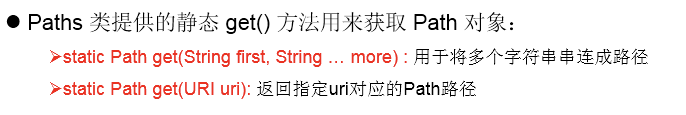
常用方法：
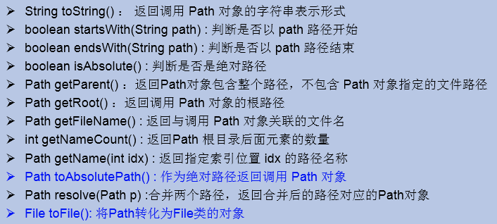
9.2 Files工具类
jdk7提供，操作文件或文件目录的工具类。
常用方法：
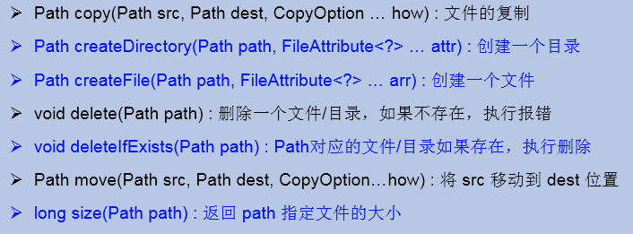
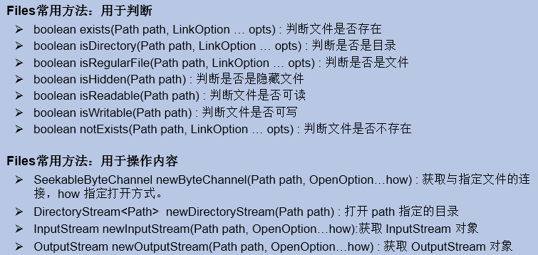
最后更新： 2021年09月14日 09:11
原始链接： http://vor.ink/2021/09/14/Java%E7%AC%94%E8%AE%B0%E5%8D%81%E4%B8%89%EF%BC%9AIO%E6%B5%81/